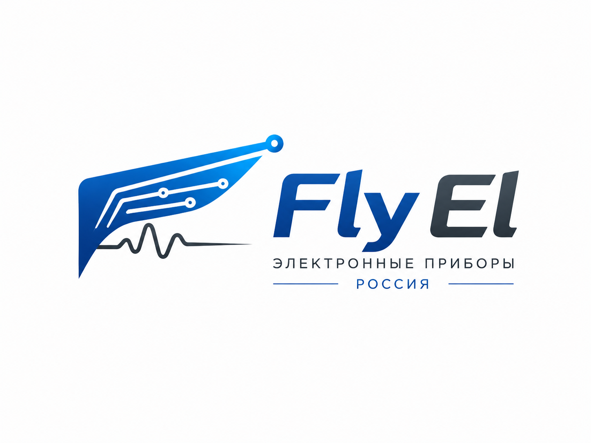

О чём этот сайт
Русский
Fly El — это сайт о практической электронике, измерениях и проверке радиокомпонентов. Здесь будут собираться лабораторные заметки, методики тестирования, результаты измерений, схемы, фотографии макетов и материалы по электронным приборам.
English
Fly El is a website about practical electronics, measurements and radio component testing. It is intended for lab notes, test methods, measurement results, schematics, prototype photos and materials related to electronic instruments.
日本語
Fly El は、実用的な電子工作、測定、電子部品のテストを扱うサイトです。 測定メモ、試験方法、測定結果、回路図、試作写真、電子機器に関する資料をまとめていく場所です。
Новости
Первый крупный раздел сайта — тестирование радиокомпонентов. В нём удобно собирать результаты проверки конденсаторов, диодов, транзисторов, стабилитронов, индуктивностей и других деталей.
Для каждой публикации можно делать одинаковую структуру: цель проверки, оборудование, схема включения, условия измерения, таблица результатов, фотографии и вывод.
Разделы сайта
- Тестирование радиокомпонентов
- Методики измерений и оформление результатов
- Оборудование и испытательные стенды